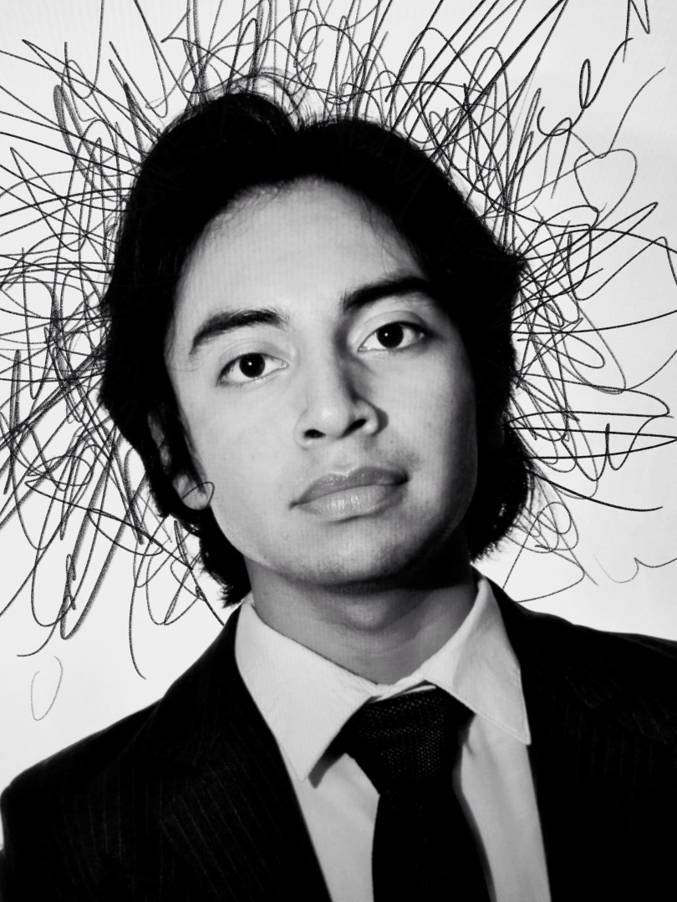

Retrato DSC_0007Gustavo Hernández
Tengo 22 años y estudio ingeniería, pero desde muy joven la fotografía se volvió, casi por accidente, mi otra carrera. Me formé de manera autodidacta y constante, empezando por retratar a familiares y amigos.
Hace dos años cubrí mi primer evento formal —una boda— y ahí entendí de verdad el valor de una imagen y las historias que hay detrás de ella. Desde entonces he explorado fotografía de alimentos, fauna y deporte, aunque mi especialidad hoy es documentar bodas y eventos con creatividad y gran detalle, para que cada quien pueda revivir sus momentos más importantes.
-
Inicios
Retratos autodidactasFotografiando a familiares y amigos para aprender el oficio por mi cuenta.
-
Hace 2 años
Mi primera bodaEl evento que me mostró el verdadero peso de una fotografía y la historia detrás de ella.
-
En el camino
Explorando otros terrenosFotografía de alimentos, fauna y deporte, ampliando la mirada.
-
Hoy
Bodas y eventos especialesDocumentando memorias con creatividad y detalle, para revivirlas en el futuro.
Dos formas de trabajar juntos
Sesiones de retrato
Sesiones individuales, de pareja o familiares, con luz natural y una dirección cercana para que salgas como realmente eres.
Cobertura de bodas y eventos
Documentación completa de tu evento: ceremonia, recepción y esos detalles que después se vuelven los recuerdos más importantes.